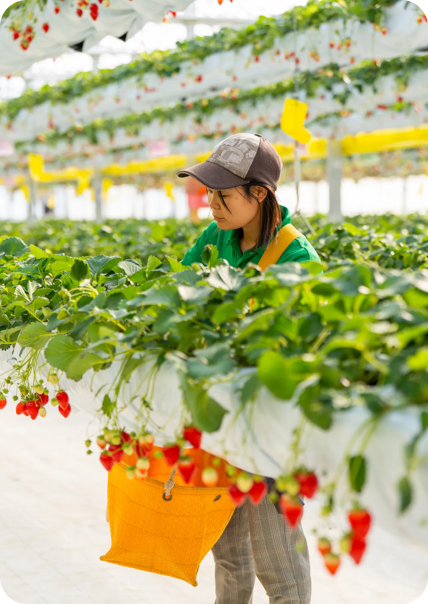

SERVICE
グリーンファームのしごと
4つの事業
ガーデンセンター事業
Green Farm

事業内容
花や苗を通じて、暮らしを育てる仕事
園芸植物やガーデニング用品の販売、売場づくり、仕入れ、企画提案、接客対応などを 行います。季節ごとの売場演出やイベント企画も含め、店舗全体をつくり上げていく仕事です。
魅力・やりがい
お客様の「育ててみたい」「庭を変えたい」という想いに寄り添い、商品を通して暮らしを豊かにするお手伝いができます。 また、農家さんやメーカーの想いを理解し、それをお客様に伝える“橋渡し役”になることも大切な役割です。 自分が提案した植物が元気に育ったと報告を受ける瞬間は、この仕事ならではの喜びです。
身に付くスキル
・植物の専門知識
・接客力、提案力
・売場づくり、商品企画力
・仕入れ、数値管理
・コミュニケーション力
ガーデンエクステリア事業
[彩庭]

事業内容
空間をデザインし、未来を育てる仕事
植栽、外構工事、ガーデンデザイン、現場管理などを行います。 お客様の理想を形にするため、設計から施工まで一貫して関わります。
魅力・やりがい
「何もなかった場所」が、自分たちの手で美しい空間へと変わる達成感。 完成した庭でお客様が笑顔になる瞬間は、大きなやりがいです。 また、職人技だけでなく、提案力やデザイン力も求められるため、ものづくりの醍醐味 を深く味わえる分野です。
身に付くスキル
・ガーデンデザイン力
・施工技術、植栽技術
・現場管理能力
・営業力、ヒアリング力
・資格取得による専門性向上
農産物直売事業
[あい菜ふぁーむ]

事業内容
作り手と地域をつなぎ、食を育てる仕事
毎日、地元の農家さんから届く新鮮で美味しい野菜・果物を地域の皆様にお届けする事業です。接客販売、売場企画、交渉、配送などの業務があります。
魅力・やりがい
農家さんの想いが詰まった農産物を、最適な形でお客様に届ける“橋渡し役”になれること。 ただ販売するだけでなく、旬や背景ストーリーを伝えることで、地域の食文化を支える仕事です。
地域とのつながりを実感できる、温かみのある事業です。
身に付くスキル
・仕入れ、交渉力
・売場演出力
・マーケティング視点
・地域連携力
・商品説明力
いちご狩り農園
[the BERRY YOKOHAMA]

事業内容
体験を育て、感動を生み出す仕事
いちごの栽培管理、観光農園の運営、予約管理、接客対応、イベント企画などを行います。「体験型農業」として、家族や観光客に楽しんでいただく事業です。
魅力・やりがい
自分たちが育てたいちごを、その場でお客様が笑顔で味わう。
“体験”そのものを提供できるのが最大の魅力です。
農業×観光×接客という新しい分野に挑戦できる、将来性のある事業でもあります。
身に付くスキル
・栽培技術
・観光サービス運営力
・イベント企画力
・SNS発信、広報力
・ブランドづくりの視点
ENTRY
あなたの個性を咲かせる職場。
ご応募を心よりお待ちしております！